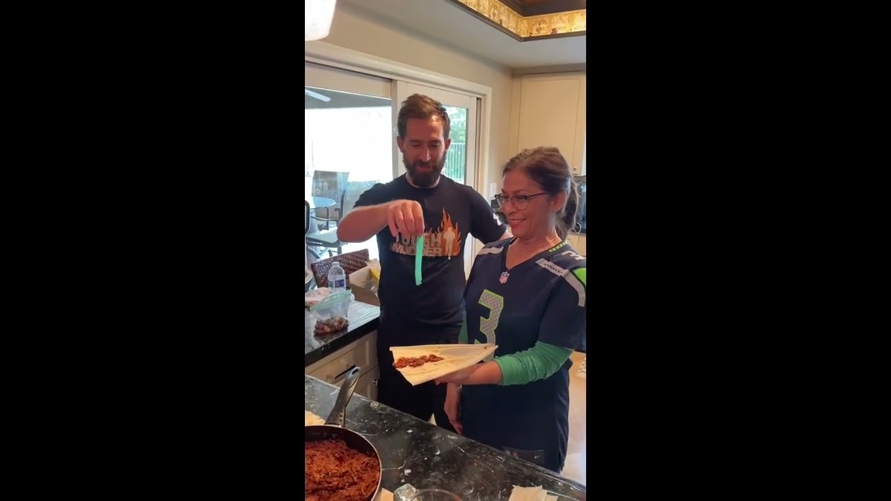

A family recipe
abuelastamales.comMade
together.Remembered
together.
Some recipes are more than instructions. They’re time spent together, passed from one generation to the next.
A little glimpse for everyone. The full recipes are kept for family.

Play family filmA recipe worth keeping.
Preserving the recipe, the process, and the moments around it
for the family who comes next.
A family recipe.
A place to keep it.
Our family cookbook
Recipes and memories, kept around the family table.